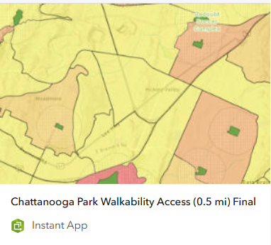

Selected Projects
Chattanooga Park Accessibility (GIS)
A spatial analysis project exploring walkable access to public parks across Chattanooga and Hamilton County. The goal was to identify neighborhoods with limited park access and provide demographic context to support conversations around equitable investment in public space.
Methods & Tools
- ArcGIS Pro (spatial joins, buffers, census tracts)
- Hamilton County park and boundary shapefiles
- ACS demographic data (income, population)
- ArcGIS Online web application
I created half-mile walkability buffers around parks, joined them to census tracts, and visualized which areas fall inside or outside walkable access. Interactive pop-ups provide demographic context such as median household income, allowing patterns of access and disparity to be explored spatially.
Why this matters: This type of analysis can support planning decisions around where new parks may be most impactful, and where existing spaces might benefit from targeted investment based on population density and neighborhood characteristics.